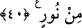

ISSIZ ÇÖLLERDEKİ
SERAP GİBİ
39. İnkâr edenlere gelince, onların amelleri, ıssız çöllerdeki serap gibidir ki
susayan onu su zanneder; nihâyet ona vardığında orada herhangi bir şey
bulamamış, üstelik yanıbaşında da (inanmadığı, kendisinden sakınmadığı) Allah’ı
bulmuştur; Allah ise, onun hesâbını tastamam görmüştür. Allah hesâbı çok çabuk
görür.
40. Yahut (o kâfirlerin duygu, düşünce ve davranışları) engin bir denizdeki yoğun
karanlıklar gibidir; (öyle bir deniz) ki, onu dalga üstüne dalga kaplıyor; üstünde de
bulut... Birbiri üstüne karanlıklar... İnsan, elini çıkarıp uzatsa, neredeyse onu dahi
göremez. Allah bir kimseye nûr vermemişse, artık o kimsenin nûru yoktur.
“İnkâr edenlere gelince, onların amelleri,” yâni onların sıla-ı rahm, köle âzâdı,
Beytullah’ı tâmir, hacılara su dağıtma, ihtiyaçlılara yardım, misâfire ikram, kurban
kesmek gibi îmanla birlikte yapıldığında sevap elde edilebilecek iyilik nevinden
amelleri “ıssız çöllerdeki” dağlardan uzak, geniş ve düz yerlerdeki “serap gibidir.” “__WORD__/Serap”, öğlen vakti çölde üzerine güneş ışınlarının parlamasıyla sanki akar suymuş
gibi zannedilen şeylerdir. Gerçekte var olan içeceklere “şarap” dendiği gibi, gerçekte
var olmayan fakat var sanılan içeceklere de “serap” denilir. “Ki susayan onu su
zanneder;” çöldeki serabı susuz olan ve olmayan kim olursa gördüğü zaman su
zannettiği halde âyette bunun sadece susuz olana tahsisi, teşbîhin her iki tarafının vech-i
şebehte ortaklığını sağlayarak teşbihin tam anlamıyla gerçekleşmesi içindir. Çünkü
serabı gören susuz, başlangıçta su bulduğunu sanır, neticede ise eli boş döner.
“nihâyet ona vardığında” o susuz kimse su sandığı, içerim de susuzluğumu gideririm
diye kendisine ümid bağladığı serabın yanına geldiğinde “orada herhangi bir şey
bulamamış,” Yâni su zannettiği şeyi ne gerçek olarak ne de önceden gördüğü şekilde
hayâl olarak bulur. Suyu bulamadığı gibi susuzluğu daha da artar. “Üstelik” vardığında
“yanı başında da (inanmadığı, kendisinden sakınmadığı) Allah’ı” yâni O’nun